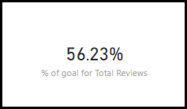
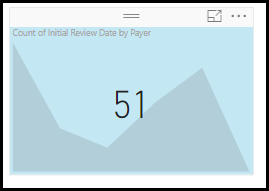
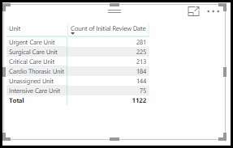
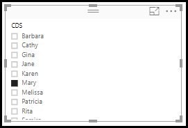
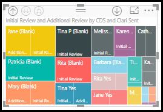

Visualization Types
Visualizations (aka visuals) display insights that have been discovered in the data. Visualizations make it easier to interpret the insight. The following visuals can be used to modify a report:
Area charts: Basic (Layered) and Stacked
The basic area chart (aka layered area chart.) is based on the line chart. The area
between axis and line is filled with colors to indicate volume. Area charts
emphasize the magnitude of change over time, and can be used to draw attention to
the total value across a trend. 
Bar and Column charts


Card


Combo charts
A combo chart is a single visualization that combines a line chart and a column chart. There are two type of combo charts available in the application, one is Line and stacked column chart and another one is Line and clustered column chart.
- when you have a line chart and a column chart with the same X axis.
- to compare multiple measures with different value ranges.
- to illustrate the correlation between two measures in one visualization.


Doughnut charts

Funnel charts
A funnel chart helps you visualize a linear process that has sequential connected stages. Each funnel stage represents a percentage of the total. So, in most cases, a funnel chart is shaped like a funnel with the first stage being the largest, and each subsequent stage smaller than its predecessor. Typically, the first stage, the "intake" stage, is the largest.
- when the data is sequential and moves through at least 4 stages.
- when the number of "items" in the first stage is expected to be greater than the number in the final stage.
- to reveal bottlenecks in a linear process.

Gauge Chart
A radial gauge chart has a circular arc and displays a single value that measures progress toward a goal/KPI. The goal, or target value, is represented by the line (needle). Progress toward that goal is represented by the shading. And the value that represents that progress is shown in bold inside the arc. All possible values are spread evenly along the arc, from the minimum (left-most value) to the maximum (right-most value). A gauge chart displays information that can be quickly scanned and understood.
- to show progress toward a goal.
- to represent a percentile measure, like a KPI.

KPI
A Key Performance Indicator (KPI) is a visual cue that communicates the amount of progress made toward a measurable goal. KPI is based on a specific measure and is designed to help you evaluate the current value and status of a metric against a defined target.
- to measure progress
- to measure distance to a goal

Line charts

Matrix

Pie chart

Scatter chart
A scatter chart always has two value axes to show one set of numerical data along a horizontal axis and another set of numerical values along a vertical axis. The chart displays points at the intersection of an x and y numerical value, combining these values into single data points. These data points may be distributed evenly or unevenly across the horizontal axis, depending on the data.
A bubble chart replaces data points with bubbles, with the bubble size representing an additional dimension of the data.

- to show relationships between 2 (scatter) or 3 (bubble) numerical values.
- to plot two groups of numbers as one series of XY coordinates.
- to turn the horizontal axis into a logarithmic scale.
- to display worksheet data that includes pairs or grouped sets of values.
- to show patterns in large sets of data, for example by showing linear or non-linear trends, clusters, and outliers.
- to compare large numbers of data points without regards to time. The more data that you include in a scatter chart, the better the comparisons that you can make.
- if your data has 3 data series and each contain a set of values.
- to present financial data.
- to use with quadrants.
Dot chart

Slicer

- Display commonly-used or important filters on the report canvas for easier access.
- Create more focused reports by putting slicers next to important visuals.
- Slicers do not support input fields.
- Slicers cannot be pinned to a dashboard.
- Drill-down is not supported for slicers.
- Slicers do not support visual level filters.
Treemap
Treemap displays hierarchical data as a set of nested rectangles. Each level of the hierarchy is represented by a colored rectangle. The space inside each rectangle is allocated based on the value being measured. And the rectangles are arranged in size from top left (largest) to bottom right (smallest).
- to display large amounts of hierarchical data.
- when a bar chart can't effectively handle the large number of values.
- to show the proportions between each part and the whole.
- to show the pattern of the distribution of the measure across each level of categories in the hierarchy.
- to show attributes using size and color coding.
- to spot patterns, outliers, most-important contributors, and exceptions.

Waterfall Chart
A waterfall chart displays a running total as values are added or subtracted. It helps to understand how an initial value is affected by a series of positive and negative changes.
The columns are color coded so you can quickly tell increases and decreases. The initial and the final value columns often start on the horizontal axis, while the intermediate values are floating columns. The waterfall charts are also called bridge charts.
- When you have to measure the changes across time series or different categories
- To audit the major changes contributing to the total value.